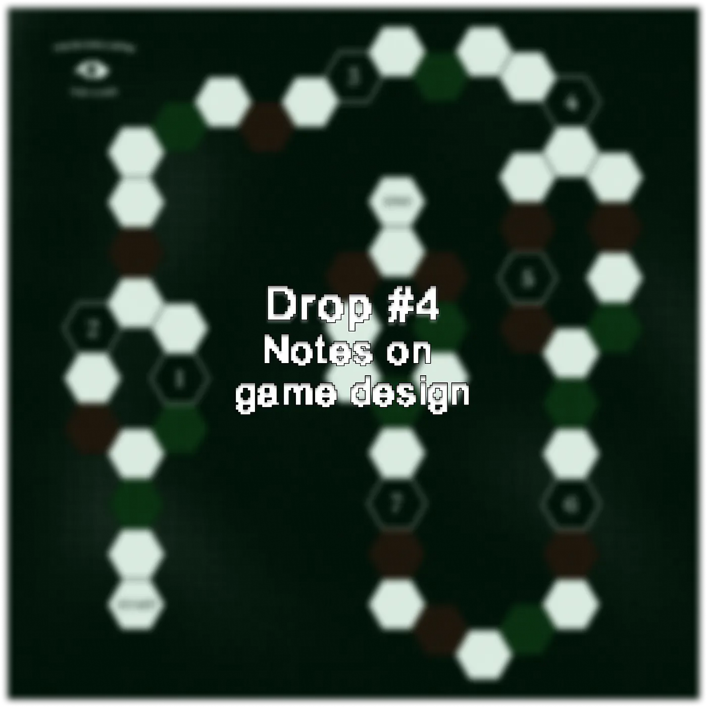
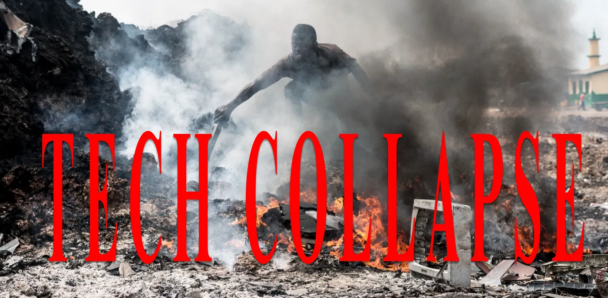
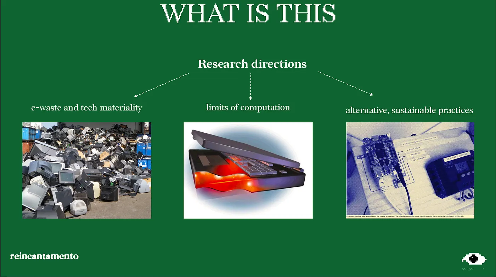
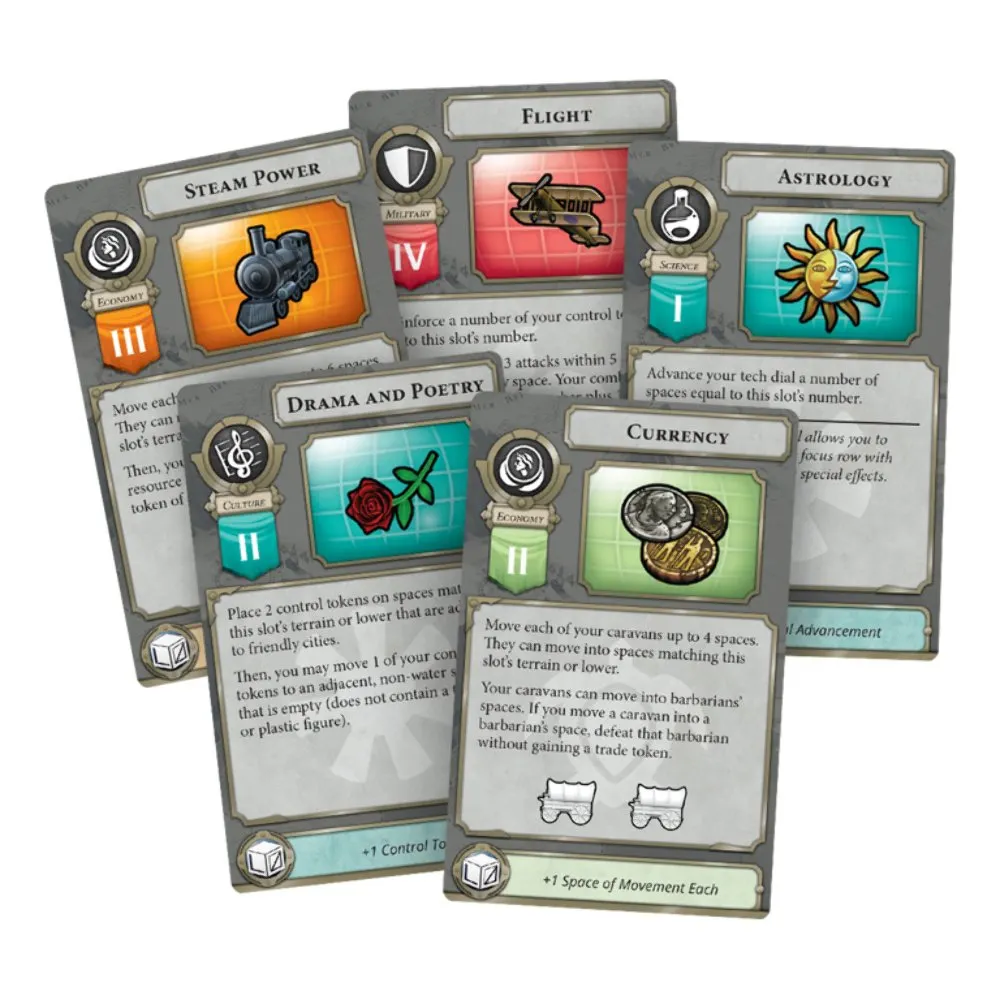
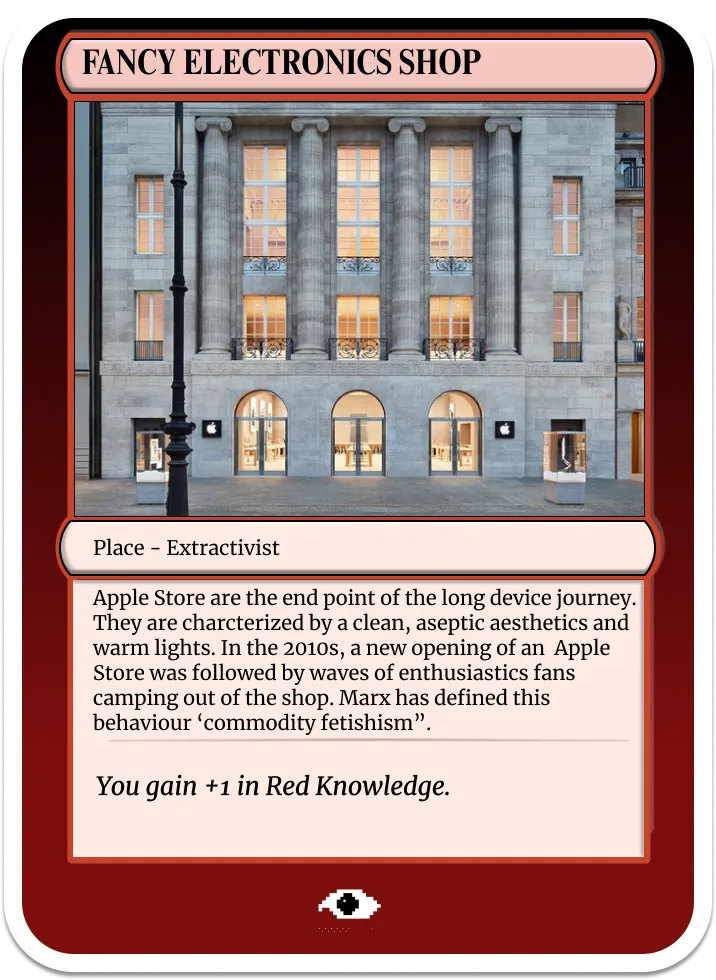
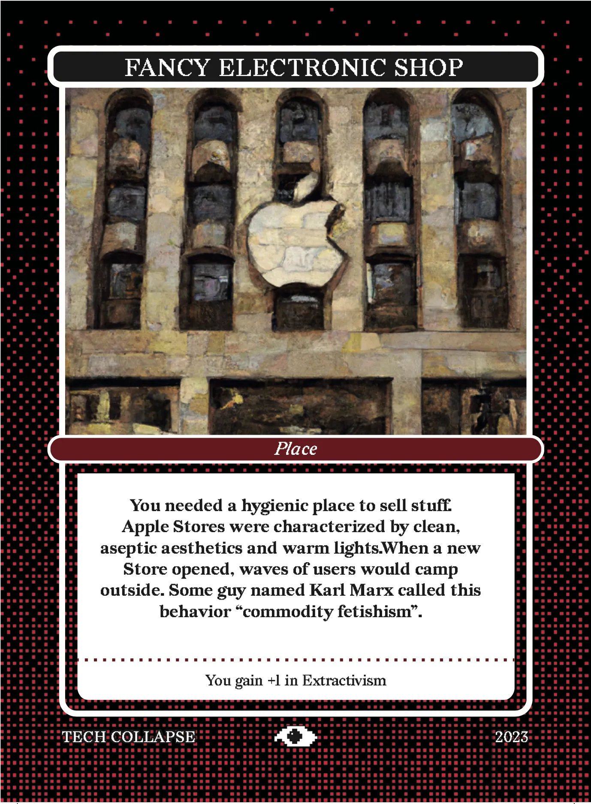
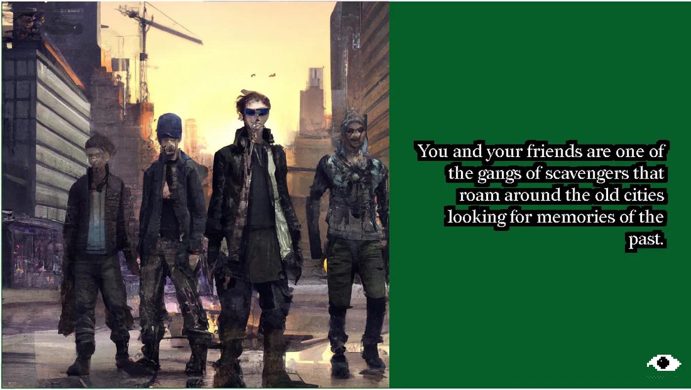
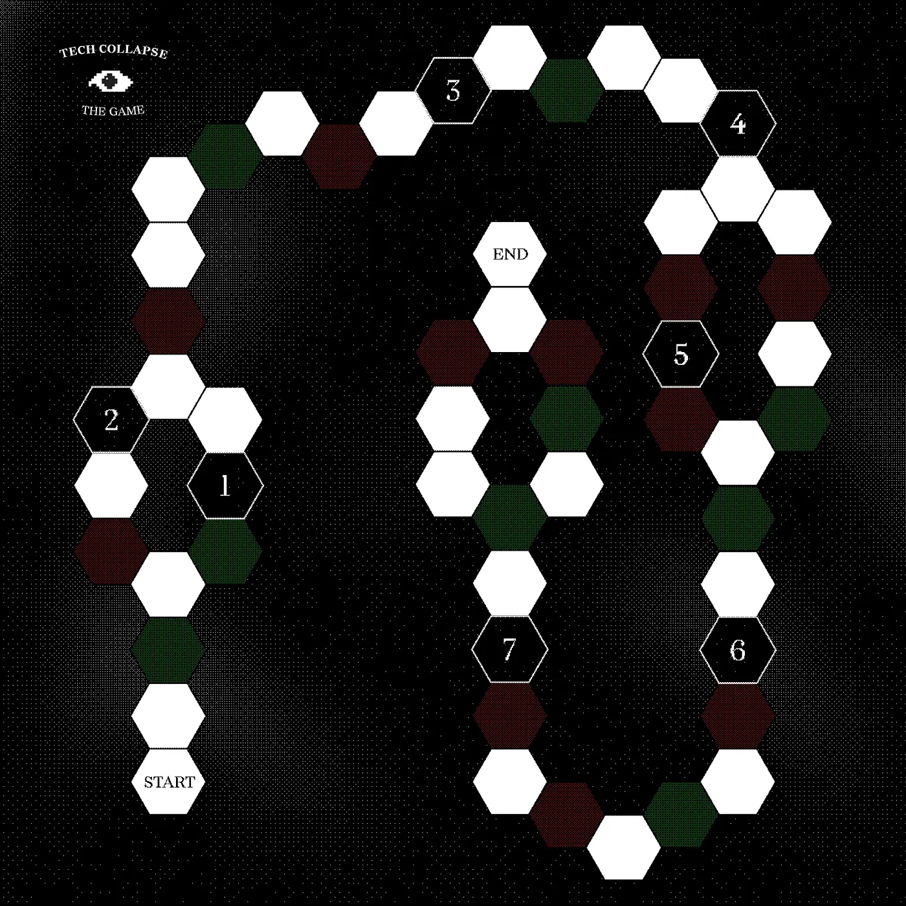

Drop #4 · August 4, 2023 · 6 min read
Behind-the-scenes of Tech Collapse
Hey everyone (▰˘◡˘▰)
July flew away feel without me even noticing. Weird. As far as this newsletter can be an impromptu, freestyle kind of thing, I’d like to maintain a minimum level of consistency. So, before a small summer break, one last Drop.
In June, I dedicated tons of energy to working on something unusual, a board game, as you may’ve guessed from recent spam on Instagram. This post will be dedicated to unpacking the project’s story and to sketching the lines for future development. Loyal to REINCANTAMENTO tagline, an open-source and work-in-progress meditation, I value the transparent disclosure of our (unfinished) creative process. I hope you don’t find it too boring.

Assembling an idea (January - March)
This journey started at the beginning of the year when we (me and my friend Anna) decided to apply for the 48 Stunden Neukölln (aka 48 Hours), a two-days art festival happening in the district of Neukölln in Berlin. Following the festival’s core theme, Play(GROUND), we decided to interpret it literally and propose an actual, board game prototype for the festival.
That was easier said than done. In the following months, the perils of game design unfolded in front of our eyes, leaving us with a big fish to fry, with little (or no) experience in the field. While the game dynamics were hard to define, the theme of the project was clear from the very beginning.

Tech Collapse was the name of an article I wrote in 2021 for KABUL, that also inspired a talk for the IAM Festival later that year. In this work, I explored the material limits of digital society, the possibility of a technical infrastructure’s collapse, and alternative, sustainable practices. In 2022, I kept collecting material on these topics in a dedicated, are.na block, accumulating more and more resources to evolve the work further.

After Anna listened to Simone Pieranni’s podcast on Taiwan and the microchips issue, we started to chat about these topics, to re-consider what I’ve written in my article and decided to use the 48h context to delve deeply into the matter. We thought that through a playful format such as a board game, we could synthesize the contradictions surrounding consumption goods in an accessible manner.
Months later, around March, we got accepted and decided to embark on this project seriously. We started with some fundamental questions:
How do you translate the research’s ideas into a game?
That is to say: how do you distill knowledge in a different format, without being too didactic?
How do you make this game, eventually, captivating to play?
Designing a world (April - June)
The answer to the first issue came spontaneously, in the form of cards. Through the collection of cards, the players get to know the different practices and stories that came from the research. This decision was vaguely inspired by the way you collect instructive cards in Half-Earth Socialism game - another speculative game born out of the Berlin scene - as well as my experience with strategy games, especially Sid Meyer’s Civilization, where technological advancements are presented in the form of cards with a relatively short caption. Later on, I discovered that deck-building game is the appropriate definition for this category of games, to whom Tech Collapse belongs.


When I was already in the process of designing the game, I also joined a playtest by the 0x Salon for their game Fau0x Salon, which also uses cards to create a debate-RPG kind of game, and this undoubtedly inspired me.
The card template constrains writing a caption that is concise and impressive. However, the different cards have to narrate technical research or academic papers. How not to come across as too didactic though? I think I found a good balance by adopting a sarcastic rhetoric (people actually laughed at the playtest, to my surprise), lightening the tone, and inserting a few cards just for the lol.
A side note: it’s not easy to be light-hearted about dramatic issues - e.g. the exploitation of mines in Congo. In this regard, I like to quote what Roland Barthes stated in Mythologies:
What I claim is to live to the full the contradiction of my time, which may well make sarcasm the condition of truth.

The ambiguity of producing this kind of educational game is that you are designing a “fun engine” and you want to use it to do something that is not, at least not for everyone, immediately funny, namely learning boring, complex, abstract stuff. Since the project’s inception, I thought about the board game format as a contingency to explore but not as the main focus of the project. The latter remained in the research material and our desire to transmit this bundle of knowledge. Consequently, we decided to keep the game system simple and enrich the game world to give it more immersivity.
Without indulging too much in details (come to the next playtest!), Tech Collapse occurs in a collapsed society in a remote future (200 years from now), where the digital world is disrupted and forgotten. Players - organized in teams - impersonate a gang of scavengers that is on the hunt for the lost knowledge of the Internet. While they try to patch together the different techniques and concepts from the past, two paths open up: the Adaptionist (green cards) and the Extractivist (red cards). The different teams explore a building - the board - and collect cards - the knowledge - reaching a different vision of the future. The board also presents some numbered tiles representing accidents and surprises that can occur in the exploration of the ruins: from a broken door to a hidden secret passage, these tiles

Efficiency or sustainability? A low-tech adaptation, or a merciless extractivist approach? The knowledge you gain today will shape the world of tomorrow
At the end of the game, players will have to speculate a possible future scenario based on the cards that they collected (and the ones that were discarded). It was lovely to see groups of people that don’t know each other or that are not knowledgeable about these topics confabulate together and imagine the future while elaborating critical thoughts on the present.
Squadding up
Besides me and Anna, this project required the help and professionality of other friends. The art direction of the project was taken over the last month by my friend Giorgio Craparo, who upgraded the design of the cards and the board to the next level and overviewed the whole printing process. Matteo Gevi and Alessio Straub, two good nerdy friends, helped in smoothing the game’s rules, and Jeein Shin preciously edited the various texts. Thanks also to offline, the space that hosted us in Berlin, a new cultural space intersecting hackers, artists, and activists.

What the future looks like (August - ?)
After this first test, we like to open source our game design process, engage with new people and expand the project. Many elements need refinement and the game rules need to be more adapted and tested
This text is our first step forward, telling our part of the story so far. If you like to be engaged or just to stay updated, you can join the Telegram group at this link. We’re looking for illustrators, writers, game designers, board game nerds, green computation researchers, and generally curious individuals!
Also, if you like to support the game’s development as well as this newsletter, now you can make a donation on ko-fi to help us ^^